Agentic
사용자가 AI를 명확한 상호작용 대상으로 인식하고, 자연어로 질문하거나 지시하며 결과를 얻는 유형입니다. 대화, 후속 요청, 결과 생성, 산출물 편집처럼 에이전트와의 상호작용이 경험의 중심에 있습니다.
Global Chat Assistant
Global Chat Assistant는 사용자가 서비스 전역에서 AI를 호출해 질문하거나 요청할 수 있는 공통 대화형 인터페이스입니다. 특정 화면이나 기능에만 종속되지 않고, 사용자가 필요할 때 언제든 AI에게 자연어로 질문하거나 업무 요청을 할 수 있습니다. 답변은 단순 텍스트일 수도 있고, 생성된 결과물, 현재 화면 맥락을 반영한 응답, 후속 액션으로 이어질 수도 있습니다. 이 패턴은 AI를 제품 전체에서 접근 가능한 공통 인터페이스로 제공할 때 적합합니다.
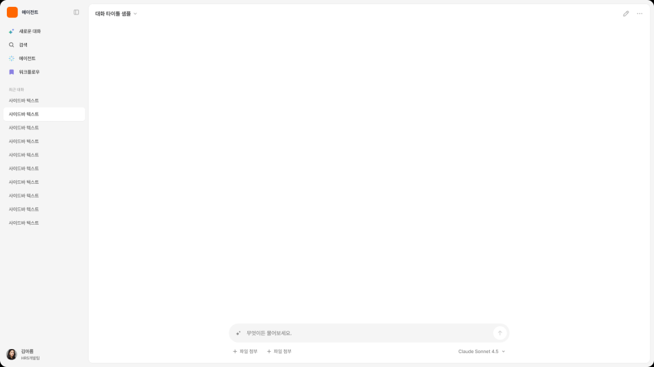
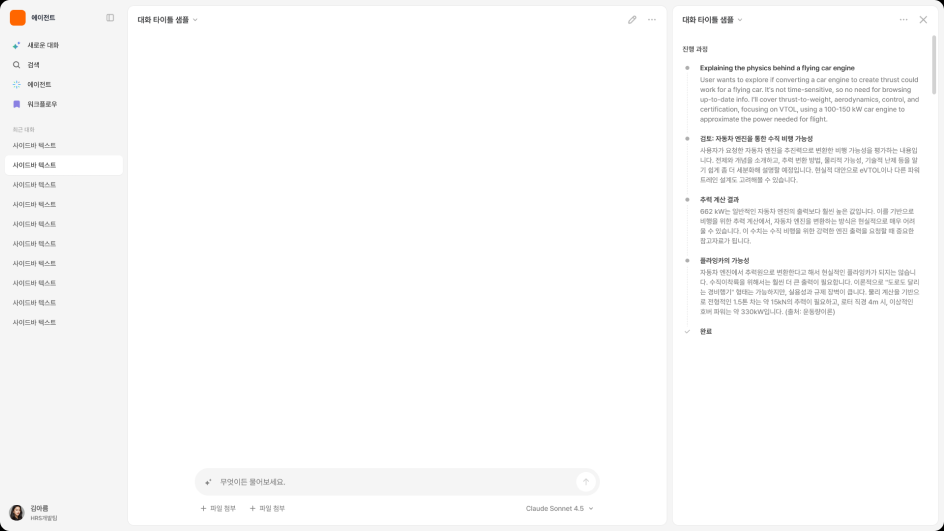
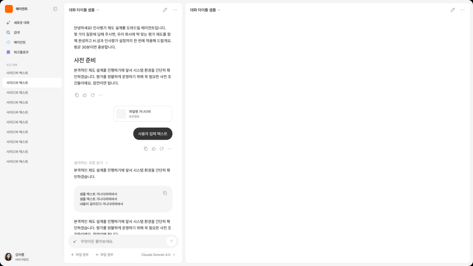
Dedicated Agent Workspace
Dedicated Agent Workspace는 사용자가 특정 작업이나 산출물을 완성하기 위해 별도의 AI 작업공간에 진입하는 UI 패턴입니다. 사용자는 단순히 AI에게 질문하고 답변을 받는 것이 아니라, 목표·조건·참조 정보 등을 바탕으로 AI와 함께 문서, 계획, 분석 결과, 리포트, 코드, 디자인 산출물 등을 만들어갑니다. 대화는 작업을 지시하고 조정하는 수단이며, 화면의 중심은 최종 결과물이나 작업 진행 과정에 있습니다. 이 패턴은 AI를 제품 전역에서 호출하는 공통 인터페이스로 제공하기보다, 특정 업무를 완성하기 위한 전용 인터페이스로 제공할 때 적합합니다.
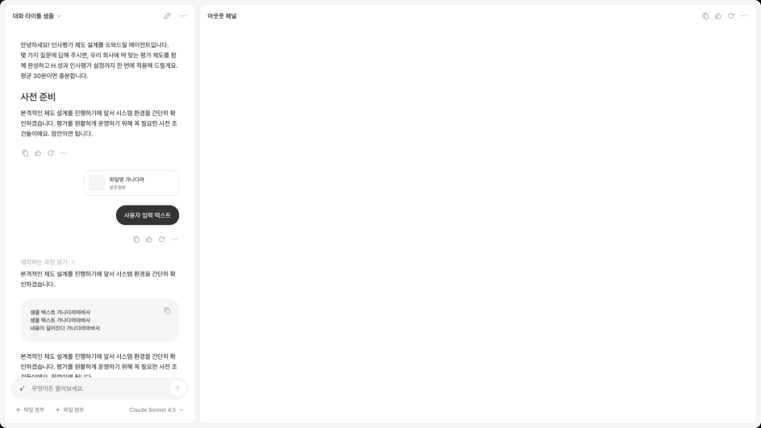
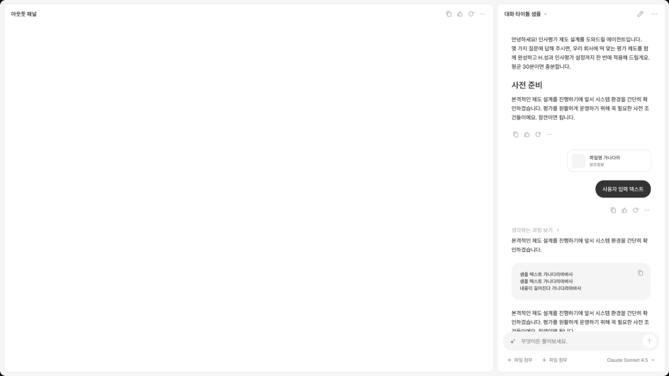
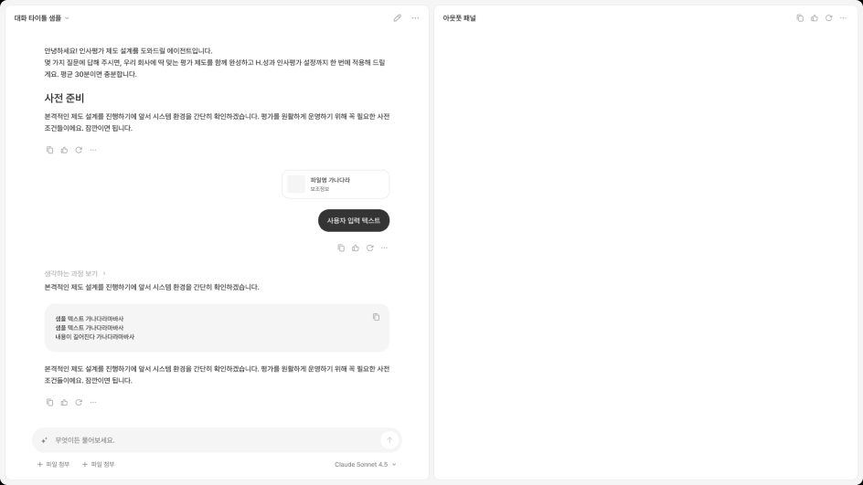
Contextual
사용자의 주 작업 화면은 유지되고, 에이전트는 현재 문서, 데이터, 입력 필드, 선택 객체를 기준으로 도움을 제공합니다. AI와 상호작용할 수 있지만, 경험의 중심은 에이전트 자체가 아니라 사용자가 보고 있는 화면과 작업 맥락입니다.
Contextual Agent Panel
Contextual Agent Panel은 사용자가 현재 화면을 유지한 채, 측면 또는 오버레이 패널에서 AI와 상호작용할 수 있게 하는 UI 패턴입니다. AI는 독립된 전역 챗처럼 동작하기보다, 사용자가 보고 있는 화면·선택 객체·문서·데이터를 기준으로 도움을 제공합니다. 사용자는 현재 작업 화면을 벗어나지 않고 AI에게 질문하거나, 요약·분석·추천·다음 액션을 요청하고, 필요한 경우 결과를 원래 화면에 반영할 수 있습니다. 이 패턴은 사용자의 주 작업 화면은 유지하면서, AI와 어느 정도 지속적인 대화나 반복 요청이 필요한 경우에 적합합니다.
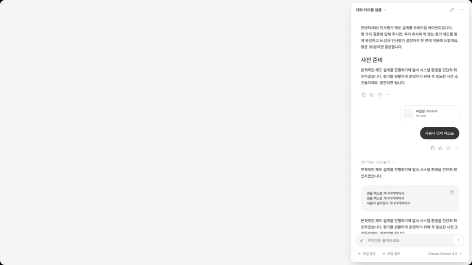
Embedded AI Elements
Embedded AI Elements는 사용자가 현재 작업 중인 화면을 벗어나지 않고, 특정 입력 필드·텍스트·콘텐츠 영역 안에서 AI 도움을 받을 수 있게 하는 경량형 UI 패턴입니다. AI가 독립된 대화 상대처럼 전면에 등장하기보다, 사용자의 작업 맥락 안에 작게 삽입되어 추천, 수정, 요약, 설명, 인사이트를 제공합니다. 사용자는 현재 화면 흐름을 유지한 채 필요한 순간에만 AI의 도움을 받고, 결과를 바로 적용하거나 닫을 수 있습니다. 이 패턴은 AI를 별도 화면이나 패널로 제공하기보다, 기존 제품 화면 안에 자연스럽게 녹여야 할 때 적합합니다.
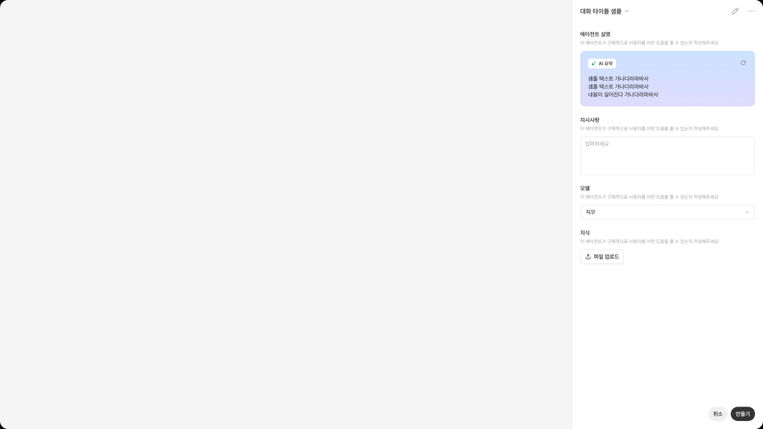
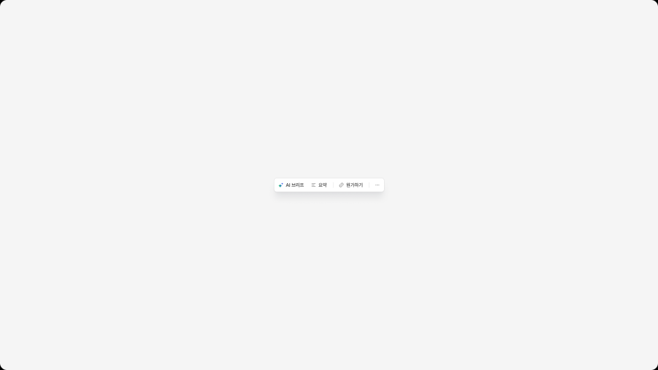
Background
사용자는 에이전트와 계속 대화하지 않고, 작업을 실행한 뒤 진행 상태, 완료 여부, 실패 사유, 결과 진입점을 확인합니다. AI는 화면 전면에서 대화 상대처럼 존재하기보다, 백그라운드에서 작업을 수행하는 실행 주체에 가깝습니다.
Background Task Monitor
Background Task Monitor는 사용자가 AI 작업을 실행한 뒤, 작업이 백그라운드에서 진행되는 동안 상태를 확인할 수 있게 하는 UI 패턴입니다. 사용자는 AI가 작업을 수행하는 동안 계속 대화로 리드하지 않아도 되며, 진행률·단계·대기열·완료 여부·실패 사유를 확인합니다. 작업이 끝나면 사용자는 결과를 열어보거나, 실패한 작업을 재시도하거나, 완료된 결과를 다음 업무로 연결할 수 있습니다. 이 패턴은 AI 작업이 즉시 끝나지 않거나, 여러 작업이 동시에 실행되거나, 사용자가 다른 화면으로 이동해도 작업 상태를 계속 인지해야 할 때 적합합니다.
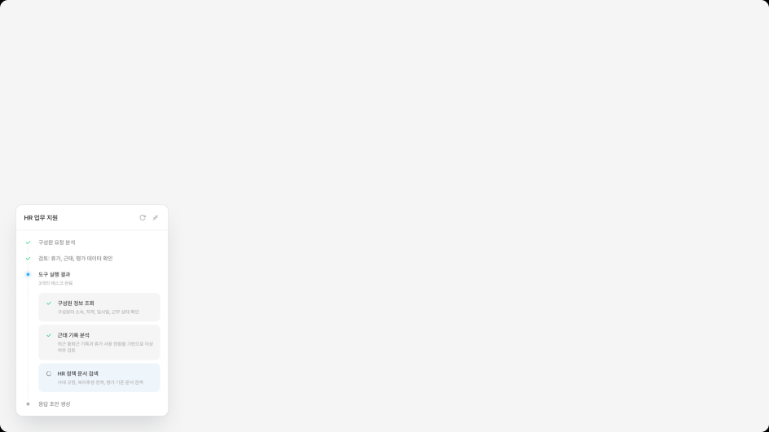
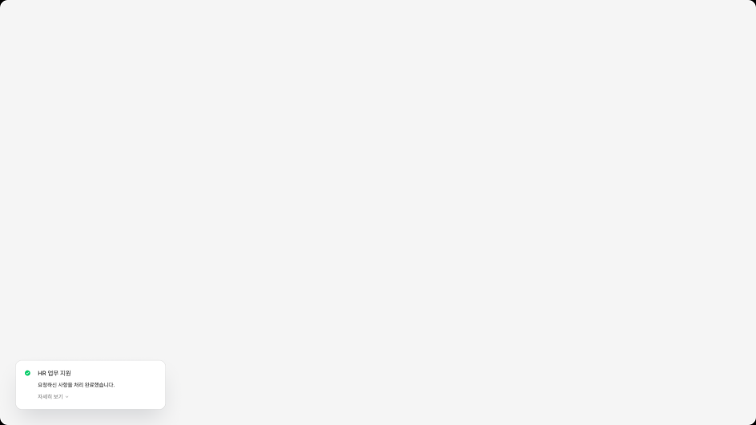
Builder
사용자가 AI에게 단순히 요청하는 것이 아니라, AI가 어떤 역할을 수행할지, 어떤 도구와 권한을 사용할지, 어떤 조건과 단계로 실행될지를 설정하는 유형입니다. 생성, 설정, 테스트, 배포 흐름이 중심입니다.
Agent/Workflow Builder
Builder는 사용자가 에이전트나 워크플로우를 직접 구성하고, 테스트하고, 배포할 수 있게 하는 UI 패턴입니다. 사용자는 AI에게 단순히 질문하는 것이 아니라, 에이전트의 역할, 지시문, 지식 범위, 도구, 권한을 설정하거나, 트리거·조건·액션을 연결해 자동화 흐름을 만듭니다. 이 패턴에서 AI는 즉시 응답하는 대화 상대라기보다, 사용자가 정의한 규칙과 흐름에 따라 실행되는 구성 대상입니다. 이 패턴은 제품 안에서 사용자가 반복 업무를 자동화하거나, 특정 목적에 맞는 에이전트를 생성하고 관리해야 할 때 적합합니다.
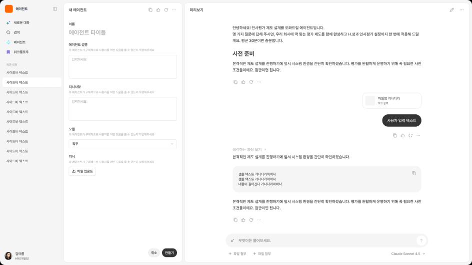
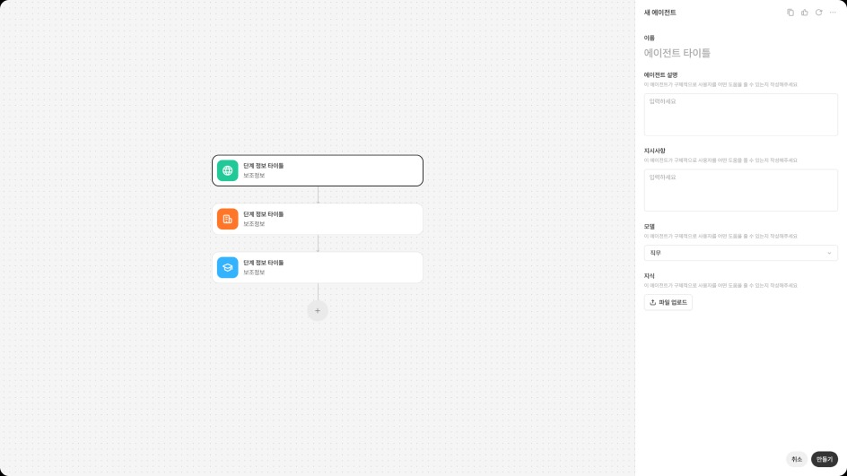
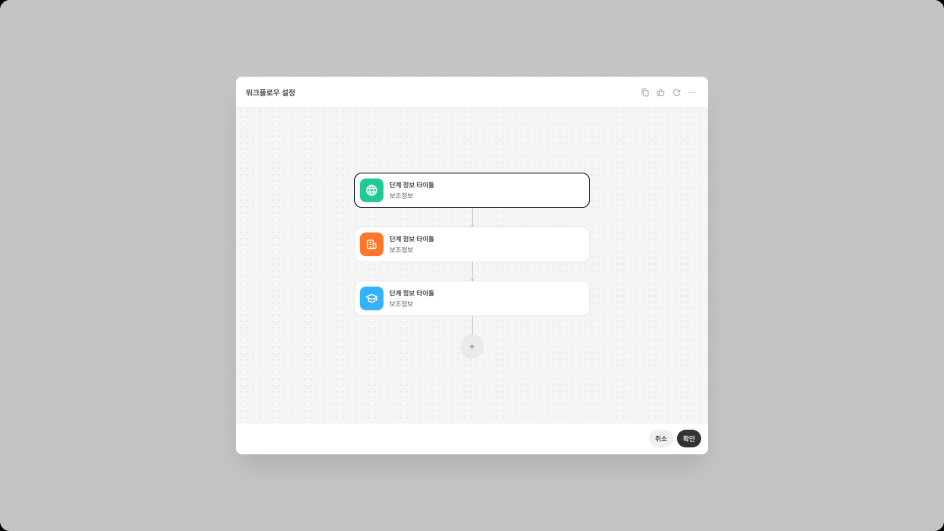
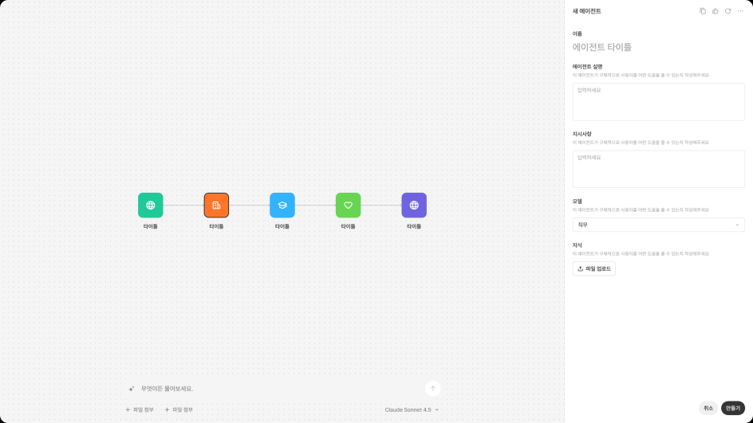